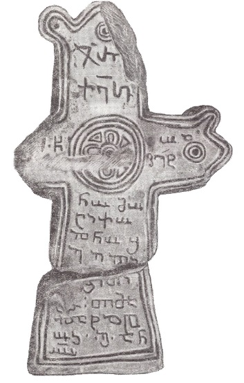

ტად-რაალის ქართული-ხუნძური წარწერა დაღესტნიდან
შინაარსი / Summary
სავედრებელი
ბიბლიოგრაფია Bibliography
კრიტიკული გამოცემა Interpretive Edition
ჯ(უა)რ
ქ(რისტ)ესი
თორმეტ -
5ნო მო -
ციქო(ჳ)ლნო შ(ეიწყალ)ე ე(რისთა)
ბ ერი
10ტა თიმა -
ლატა წ -
ო ბეგ ა(მე)ნ
ო(ჳფალ)ო
დიპლომატიური გამოცემა Diplomatic Edition
ႿႰ
ႵႤႱႨ
ႧႭႰႫႤႲ
5ႬႭ ႫႭ
ႺႨႵႭႪႬႭ ႸႤ Ⴄ
Ⴁ ႤႰႨ
10ႲႠ ႧႨႫႠ
ႪႠႲႠ Ⴜ
Ⴍ ႡႤႢ ႠႬ
ႭႭ

ტად-რაალის ქართული-ხუნძური წარწერა დაღესტნიდან
{'ka': 'ჯვარი ქრისტესი. [..] წმიდაო ათორმეტნო მოციქულნო, შეიწყალე ერისთავი [?] ბ[ერ?]ი[ტა?] თიმალატა წო ბეგ, ამინ უფალო.'}
{'default': "წარწერაში ნახმარია განკვეთილობის ნიშნები და ქარაგმები.\n გამომცემლის აზრით, თუ ევი მართლაც ერისთავს ნიშნავს, მაშინ მოსალოდნელია მომდევნო სიტყვა ამ ერისთავის სახელი ყოფილიყო\n (ამ სიტყვის ბოლო ნაწილი ჩანს ბერიტა თუ ბირიტა. ისიც შესაძლოა, რომ ტა ადგილობითი ბრუნვის ნიშანი იყოს).\n საინტერესოა სიტყვა თიმალატაწობეგ. ტოგო გუდავას აზრით, ეს ხუნძური წინადადებაა და სამ სიტყვად იშლება: თიმალატა წობ ეგ.\n აქ გადმოცემული უნდა იყოს დღევანდელი ხუნძურის ლ'იმალატა წაობ ლ'ეგი, რაც ნიშნავს „ბავშვებზე წყალობა დადევი“ (ე.ი. ბავშვები შეიწყალე).\n პირველ სიტყვაში ხუნძური ყრუ ფშვინვიერი სპირანტი ლ' გადმოცემულია თ–თი. ქართულს ლ' ბგერა (და მისი შესატყვისი ნიშანი) არა აქვს,\n ამდენად მისი თ-თი გადმოცემა შეიძლება აიხსნას აკუსტიკური სიახლოვით (ლ' გამოთქმაში დაახლოებით თლ-ს უდრის).\n ხუნძურის ანწუხურ დიალექტში ლ' იძლევა კიდეც თ-ს, მაგრამ, გამომცემლის აზრით, ძნელია დავუშვათ, რომ წინათ ასეთი მოვლენა გვქონდა ხუნძახშიც (სადაც წარწერაა ნაპოვნი).\n ლ' ამავე თ-თია გადმოცემული არნ. ჩიქობავას მიერ გამოქვეყნებულ წარწერაშიც\n (არნ. ჩიქობავა. ქართულ-ხუნძური წარწერა XIV საუკუნის დაღისტნიდან. სსრკ მეცნ. აკად. საქართველოს ფილიალის მოამბე ტ.1, N4, 1929. 323):\n თეგი – ლ'ე - გი. ლ'იმალატა მრავლობითი რიცხვის ლოკატიური ბრუნვის ფორმაა. ამ სიტყვის სახელობითია ლ'იმერ, მრავლობით რიცხვში - ლ'იმალ.\n თანამედროვე ხუნძური ნორმის მიხედვით, წარწერაში უნდა გვქონოდა ლ'იმალაზდა (ლ'იმალ – მრ. რიცხვის სახელობითი+ა ჩანართი ხმოვანი+ზ ერგატივის ნიშანი,\n რომელიც ირიბ ბრუნვებში გადაყვება, და I სერიის ლოკატიური ბრუნვის ნიშანი). მაგრამ წარწერაში დადასტურებული ფორმა (თიმალატა) საყურადღებო სწორედ იმითაა,\n რომ აქ ზ არ ჩანს, ხოლო ლოკატიური ბრუნვის ნიშნად და-ს ნაცვლად - ტა გამოდის. არც ერთი ეს მოვლენა შემთხვევითი არაა:\n წარწერის ამომჭრელმა, თუ პირველ ასოს (თ-ს) არ მივიღებთ მხედველობაში, აქ ზუსტად გადმოსცა ხუნძახური დიალექტური ფორმა ლ'იმალატა.\n ერგატივისეული ზ-ს დაკარგვა (მრ.რიცხვში) ხუნძახურისათვის ბუნებრივია ამჟამადაც საერთოდ და კერძოდ ამ სიტყვაში. ხუნძახური ნორმაა დაცული\n ლოკატიური ბრუნვის ნიშნის გადმოცემაშიც, სალიტერატურო ხუნძურისაგან განსხვავებით ხუნძურში ჩვეულებრივია -ტა სუფიქსიანი ფორმები\n (დიტა „ჩემზე“, ნუხტა „გზაზე“, განჭიტა ქვაზე) იგი უცხო არაა რიგი სხვა (უპირატესად სამხრული) დიალექტებისათვისაც.\n ეს ფაქტი საინტერესოა ხუნძური ენის ისტორიისათვისაც. ჩანს, ლოკატივის ნიშნად ტ–ს გამოყენება, ასევე ერგატივისეული ზ-ს უქონლობა\n საკმაოდ ხანგრძლივი ისტორიის მქონე მოვლენებია, ტ შესაძლოა უფრო ძველიც იყოს დ-ზე. მეორე სიტყვა წობ წყალობას ნიშნავს. ხუნძურში წ გემინირებულია (წоობ),\n ქართულში იგი გემინირებულ თანხმოვანთა უქონლობის გამო გადმოცემულია სათანადო მარტივი თანხმოვნით.\n ეს სიტყვა ასევეა წარმოდგენილი არნ. ჩიქობავას მიერ გამოქვეყნებულ წარწერაში\n (არნ. ჩიქობავა. ქართულ-ხუნძური წარწერა XIV საუკუნის დაღისტნიდან. სსრკ მეცნ. აკად. საქართველოს ფილიალის მოამბე ტ.1, N4, 1929. 322–323).\n მესამე სიტყვა ლ'ეგი „დადევ“ (პრდ. „დაგედოს“) ნატვირთი კილოს ფორმაა ზმნისა ლ'ეზე დადება. წარწერაში ეს სიტყვა ძლიერ დამახინჯებულია:\n აკლია თავკიდური თანხმოვანი ლ' (რომელიც თ-ს სახით უნდა ყოფილიყო წარმოდგენილი) და ბოლოკიდური ხმოვანი ი (–გი ფორმანტის ნაწილი).\n არნ. ჩიქობავას მიერ გამოცემულ წარწერაში ეს სიტყვა უკეთაა დაცული, იქ თეგი იკითხება. წჾობ ლ'ეგი ბუნებრივი ხუნძური გამოთქმაა, ობიექტი,\n ვის წყალობასაც, შესთხოვენ (უფალს), ამჟამადაც - ტა [და]იან ლოკატიურ ბრუნვაში ისმის. ხუნძურ ნაწილში არ გვხვდება ქარაგმა და გაყოფის ნიშნები.\n\n შაჰბან ჰაფიზოვი წარწერას ამგვარად აშინაარსებს: „ჯვარი ქრისტესი, წმიდაო ათორმეტნო მოციქულნო,\n შეიწყალენ ერისთავი, ზედა... ბერი, შვილებს წალობა ეყოს. ამინ, უფალო!"}
<div type="edition" xml:lang="ka" ana="mtavruli" xml:space="preserve">
<ab>
<lb n="1"/><w lemma="ქრისტე"><expan><abbr>ქ</abbr><ex>რისტ</ex><abbr>ე</abbr></expan></w>
<w lemma="განსუენება"><expan><abbr>გა</abbr><ex>ნ</ex><abbr>ო</abbr><ex>ჳ</ex><abbr>ს</abbr><ex>უ</ex><abbr>ენე</abbr></expan></w>
<w lemma="სულ">სოჳ<lb n="2" break="no"/>ლსა</w>
<name nymRef="ვაჩა">ვაჩაჲს<lb n="3" break="no"/>ასა</name>
<name nymRef="გურა"><expan><abbr>გო</abbr><ex>ჳ</ex><abbr>რაჲ<lb n="4" break="no"/>სასა</abbr></expan></name>
<name nymRef="მირა"><expan><abbr>მ</abbr><ex>ი</ex><abbr>რა</abbr><ex>ჲ</ex><abbr>ს</abbr><ex>ა</ex><abbr>ს</abbr><ex>ა</ex></expan></name>
</ab>
</div>